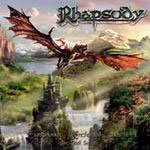

|
|
||
Rhapsody : Symphony of Enchanted Lands II - The Dark Secret (2004) |
|

mightyrhapsody.com |
1. The Dark Secret (Ira Divina) 4:13 |
8.1/10 |
|
El quinto disco de la banda de Luca Turilli y Alex Staropoli se desarrolla con la pretensión de ser el más grandioso de la banda, con la incorporación por primera vez de una orquesta, la filarmónica Bohuslav Martinu, de Zlin en la república Checa, y la ayuda de un narrador profesional para las partes habladas, nada menos que el conocido actor Christopher Lee. Tras la introducción hablada a la historia, que continúa con la poco original trama fantástica desarrollada durante los anteriores discos de la banda, una intro majestuosa pero menos impactante que las de anteriores discos de la banda, establece la atmósfera adecuada para "Unholy Warcry", típica canción de apertura de Rhapsody, rápida, sobre el doble bombo, de impactante sonoridad gracias a la orquesta, pero a la que le falta un puntito de brillantez comparada con Dawn of Victory o con Knightrider of Doom (las aperturas de sus dos últimos discos). Tras una parte clásica, "Never Forgotten Heroes" recupera el ritmo de heavy metal y los espectaculares coros de Rhapsody, incorporando también cambios de ritmo y partes instrumentales, aunque de nuevo se echa en falta la guinda del pastel. "Elgard's Green Valleys" es un tema de enlace, instrumental, alegre, con ciertos toques folk. "The Magic of the Wizard's Dream" es una balada, de estilo inconfundiblemente Rhapsody, con ciertas partes emocionantes y pomposas, pero con otras algo apagadas. Tras una terrorífica introducción hablada, unos coros grandiosos abren "Erian's Mystical Rhymes", tema largo y épico, potente, de ritmos cambiantes, varios solos instrumentales y todos los ingredientes para una gran canción. "The Last Angel's Call" es una pieza más directa, menos recargada, aunque sin evitar los coros, y que tiene el estribillo más pegadizo del álbum. "Dragonland's Rivers" es otra pieza lenta, de sonido clásico, interesante y original. "Sacred Power of Raging Winds" es otro corte épico, largo, de ritmos variopintos, a veces sobre el doble bombo, otras muchísimo más lentos, pomposo en ocasiones, desgarrado en otras, con algunas de las mejores partes instrumentales del disco, y un final espectacular. "Guardiani del Destino", cantado en italiano, es una pieza lenta, de sonido dulce, que crece en intensidad alrededor del estribillo. Los impresionantes metales que abren "Shadows of Death" dejan paso a las guitarras eléctricas, más presentes en esta canción que en el resto del disco, sobre todo en un solo a duo con los teclados. "Nightfall on the Grey Mountains" establece un atmósfera inquietante con los teclados, sobre los que la orquesta desarrollan una pieza de nuevo larga pero lo bastante variada, con partes muy llamativas y coros casi omnipresentes. Rhapsody es una de esas bandas de las que casi no se puede decir nada malo, porque luego llegan los fans y te ponen verde ;-), pero me voy a arriesgar: este no es, ni mucho menos, el mejor disco de Rhapsody. Cierto es que es un buen disco pero tiene, bajo mi punto de vista, dos puntos negativos: el primero es que la producción se les ha ido un poco de las manos: la sonoridad de la orquesta se impone demasiado, la voz de Fabio Lione suena un poco apagada y las guitarras hay que adivinarlas aún más de lo habitual en Rhapsody. Y segundo es que el disco tiene grandes temas, largos, clásicos, variados, complejos, profundos y espectaculares, pero le faltan buenas canciones: tres o cuatro canciones de cuatro o cinco minutos, con un estribillo pegadizo y fácil de recordar habrían redondeado el álbum, pero simplemente no están ahí. Aún así el disco vale la pena, es sólo que añadir una orquesta no hace que automáticamente un disco sea mejor, y con éste no se han superado a si mismos. |
||
- Crítica escrita por Rubén Béjar - |
||